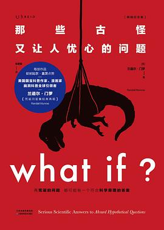

2024年11月
广播发布后不可编辑，所以每条都是那一刻的原话。
2024-11-29 19:19:28
 玩过 深入 Inside ★★★★☆
玩过 深入 Inside ★★★★☆
太有深度了以至于我玩不懂。但美术满分，总体上九分。
2024-11-27 17:05:07
看过 伍六七之记忆碎片 ★★★★☆
喜欢“权莲无休”的爱情，虽然慢慢缺憾。主线剧情推进有点慢。
2024-11-26 00:38:50
看过 伍六七之暗影宿命 ★★★★☆
动作设计得蛮好，剧情就另说。
2024-11-25 21:32:41

一个在图书馆看到的虽然严谨但是常抖机灵的科普书。
2024-11-25 13:12:06
在看 伍六七之暗影宿命 ★★★★☆
动作设计得蛮好，剧情就另说。
2024-11-23 22:05:03
看过 足球俱乐部（北京人艺2023版） ★★★★☆
补标2024年11月23日晚的德毅剧社的演出，我看得很震撼，表演很精彩，我也很喜欢。
2024-11-22 23:28:27
看过 好东西 ★★★★☆
这是我今年看过的最舒服的一部电影了，很喜欢从《爱情神话》到这里导演设计的圆桌戏，上海的元素变得少了，却成了很多的背景，比如街道的梧桐，国泰电影院，四行仓库与光滑的高架底。尝眼泪那里我就觉得致敬了一部电影，可我想不起来了，就像我想不起来这里的一个我很中意的call back。金句多了反而影响观感，很是小资产阶级的空中阁楼，但视听语言依旧给力。开头那段声音作为线索串联起母亲生活的杂耍蒙太奇，livehouse与学校演出的平行蒙太奇非常精彩。彩蛋也蛮有意思的，导演名字的小学，墙上涂鸦的《爱情神话》，熟人梅萍与网红小徐。
2024-11-20 00:25:32
看过 花辫儿小神明 / みつあみの神様 ★★★☆☆
很精良的画风，很矛盾的背景，相较于漫画删去了很多内容，包括他哥哥的故事，但又自圆其说结尾一样起来了。尊重小女孩的选择，但为别人而活我还是做不到。
2024-11-18 00:19:01
看过 你想活出怎样的人生 / 君たちはどう生きるか ★★★★★
好对上我的电波。当火焰燃起来的时候作画尤其厉害，凌乱却细致。故事倒是有点类似《Sonny Boy》，同样是虚构了一个世界。只是敬佩宫老爷子这么大岁数了还依旧爱着这个原来的世界，仍然希望这个世界会更好。
2024-11-14 00:31:21
在读 家庭、私有制和国家的起源 ★★★★☆
恩格斯写得总是让我昏昏欲睡。
2024-11-14 00:30:49
 想读 繁花
想读 繁花
真厉害呀这个文字，短促又准确。我最喜欢沪太路。
2024-11-14 00:17:00
 在听 混入人类计划 ★★★★☆
在听 混入人类计划 ★★★★☆
喜欢第一首。魔都对每个人来说还是有言语的。
2024-11-14 00:14:34
在读 那些古怪又让人忧心的问题 ★★★☆☆
一个在图书馆看到的虽然严谨但是常抖机灵的科普书。
2024-11-09 13:55:23
看过 毒液：最后一舞 / Venom: The Last Dance ★★☆☆☆
不仅剧情稀烂，画面还是一滩毒液。我真的不喜欢3D电影了。加多宝来南京看的第一场电影。
2024-11-07 19:51:38
想看 壮志凌云2：独行侠 / Top Gun: Maverick
2024-11-06 16:39:45
看过 重启人生 / ブラッシュアップライフ ★★★★★
第一集就收了好多伏笔，有趣。（2024, 11, 6，最后一集也回收了好多伏笔。）
2024-11-03 20:30:21
在看 重启人生 / ブラッシュアップライフ ★★★★★
第一集就收了好多伏笔，有趣。
2024-11-01 11:20:22
2024-11-01 11:07:58
想看 四月三周两天 / 4 luni, 3 săptămâni și 2 zile